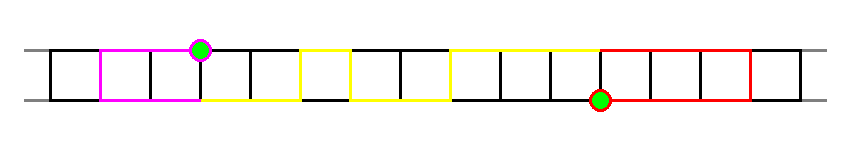

由一个 $2 \times n$ 的字符矩阵，每个位置上有一个小写字母，给定一个由小写字母构成的长度为 $k$ 的字符串 $w$。定义一个解是一个格子的序列 $c_1, c_2, \cdots, c_k$，满足：
对于 $\forall 1 \leq i \leq k$，有 $c_i = w_i$。
所有的格子两两不相同。
对于 $\forall 1 \leq i < k$，$c_i$ 和 $c_{i+1}$ 恰有一公共边。
你需要求出，在这个矩阵中，一共由多少个互不相同的解。
由于答案可能很大，请模 $10^9 + 7$ 输出。
前两行各包含一个由小写字母构成的长度为 $n$ 的字符串 ($1 \leq n \leq 2000$)，描述这个 $2 \times n$ 的字符矩阵。
第三行不包含任何输入。
第四行包含一个由小写字母构成的长度为 $k$ 的字符串 $w$ ($\left| w \right| = k; 1 \leq k \leq 2000$)，表示模式串。
输出一行一个整数，表示互不相同的解的数量模 $10^9 + 7$ 的值。
由 $2 \times n$ 矩阵的性质，$2 \times n$ 矩阵中的任何一条简单路径一定如下图所示：
即左边一段 U 形、中间一段固定方向的路以及右边一段 U 形。
如果 $k \geq 3$，则路径中至少有一段是左右走的。我们规定一条路径的正方向就是中间部分 (黄色部分) 的方向。
(当 $k \leq 2$ 时，直接特判即可，如果一条路径没有黄色部分，那么它一定是一个单纯的 U 形，是相对容易处理的)
因此，为了方便起见，我们只统计正方向是向右的路径。那么向左的怎么办？将整个串 $w$ 翻转过来就再跑一遍就行了。
于是我们现在需要统计正方向是向右的路径 (条数)。不难发现，对于一个左 U 形，它一定对应着 $w$ 的一个前缀，对于右 U 形，它一定对应着 $w$ 的一个后缀。
于是我们先花 $O \left( n^2 \right)$ 时间判断，对于每个 U 形 (一共 $O \left( n^2 \right)$ 个)，它是否是合法的 (即是否是 $w$ 的前缀 [左 U 形] 或后缀 [右 U 形])。
这个的判断不难，首先 Hash 显然是可以滴，不过并不需要这么麻烦。
我们可以通过暴力在 $O \left( n k \right)$ 的时间内得到两个串 (矩阵上的串和模式串) 的任意一对后缀的 LCP，然后判断两个串是否相等只需要比较对应位置上的 LCP 是否不小于串长即可。
由于可以逆着走，因此矩阵上的串和模式串的反串也需要求一遍 (也就是说一共需要求 $4$ 遍：第一行和第二行、$w$ 和 $w^R$)。
于是，现在可以在 $O \left( 1 \right)$ 的时间内检验一个 U 形是否合法，接下来就是考虑中间部分 (黄色部分) 了。
这可以通过一个双行 DP 来完成：用 $f_{i, j, k}$ 表示当前在矩阵的第 $i$ 行第 $j$ 列，以及匹配了 $w$ 的 $k$ 个字符的方案总数。
转移不难列出，就是枚举 "横向走一步" 还是 "横向走一步 + 纵向走一步"，就留做习题了。
接下来就是把两旁的 U 形加入进来。不妨设我们是从左往右 DP 的，那么先考虑左侧的 U 形。
这里我们首先需要规定 U 形的长度 (横跨的格子数) 要 $\geq 2$，否则会和 "纵向走一步" 算重。
然后，对于一个右端点为 $j - 1$，长度为 $d$ 的合法 U 形，我们将状态记录到 $f_{i, j, 2 d}$ 就可以了，$i$ 取决于这个 U 形是向下走的还是向上走的。
对于右侧的 U 形，就更简单了。当 DP 完一个 $j$ 时，我们考虑左端点为 $j + 1$ 的 U 形，设存在一个长度为 $d$ ($d \geq 2$) 的合法 U 形，就直接将答案加上 $f_{i, j, m - 2 d}$，同样 $i$ 取决于向下还是向上。
当然，右侧也可以不走 U 形，因此形如 $f_{i, j, m}$ 的 DP 状态也要计入答案。
从而，我们就完成了最主要的双行 DP 的过程，这一部分的时间复杂度是 $O \left( n^2 + n k \right)$ 的。
最后还需要去掉重复计算的单纯的 U 形，这个很简单，由于 "单纯的 U 形" 只有 $O \left( n \right)$ 个，因此使用我们刚才的检验算法，并去除它就可以了。这部分的复杂度是 $O \left( n \right)$。
综上，总的时间复杂度就是 $O \left( n^2 + n k \right)$。
#include <bits/stdc++.h>
const int N = 2054, mod = 1000000007;
int n, m, ans = 0;
char map[4][N], *s = map[2], *S = map[3];
int f[2][N][N]; // r, c, pos
inline int & add(int &x, const int y) {return x += y - mod, x += x >> 31 & mod;}
inline int & sub(int &x, const int y) {return x -= y, x += x >> 31 & mod;}
struct lcp_manager {
int lcp[N][N];
void assign(int n, char *s, int m, char *t) {
int i, j;
for (i = 0; i <= n; ++i) lcp[i][m] = 0;
memset(lcp[n], 0, m << 2);
for (i = n - 1; ~i; --i)
for (j = m - 1; ~j; --j)
lcp[i][j] = (s[i] == t[j] ? lcp[i + 1][j + 1] + 1 : 0);
}
} _[4], *l = _, *L = _ + 2;
#define fy(name, cond) inline bool name(int i, int j) {int d = abs(i - j) + 1; return d * 2 <= m && (cond);}
fy(turnLD, L->lcp[j][m - d] >= d && l[1].lcp[j][d] >= d)
fy(turnLU, L[1].lcp[j][m - d] >= d && l->lcp[j][d] >= d)
fy(turnRD, l->lcp[i][m - 2 * d] >= d && L[1].lcp[i][0] >= d)
fy(turnRU, l[1].lcp[i][m - 2 * d] >= d && L->lcp[i][0] >= d)
#undef fy
void DP() {
int i, j, D;
for (i = 0; i <= n; ++i) memset(f[0][i], 0, (m + 1) << 2), memset(f[1][i], 0, (m + 1) << 2);
for (i = 0; i < n; ++i) {
f[0][i][0] = f[1][i][0] = 1;
for (j = i - 2, D = 4; j >= 0 && D <= m; --j, D += 2)
add(f[0][i][D], turnLU(i - 1, j)), add(f[1][i][D], turnLD(i - 1, j));
for (j = 0; j < m; ++j) {
if (f[0][i][j] && s[j] == map[0][i]) {
add(f[0][i + 1][j + 1], f[0][i][j]);
if (s[j + 1] == map[1][i]) add(f[1][i + 1][j + 2], f[0][i][j]);
}
if (f[1][i][j] && s[j] == map[1][i]) {
add(f[1][i + 1][j + 1], f[1][i][j]);
if (s[j + 1] == map[0][i]) add(f[0][i + 1][j + 2], f[1][i][j]);
}
}
for (j = i + 1, D = 4; j < n && D <= m; ++j, D += 2) {
if (turnRD(i, j)) add(ans, f[0][i][m - D]);
if (turnRU(i, j)) add(ans, f[1][i][m - D]);
}
}
for (i = 1; i <= n; ++i) add(add(ans, f[0][i][m]), f[1][i][m]);
if (!(m & 1) && m <= 2 * n) add(add(ans, turnLD(n - 1, n - m / 2)), turnLU(n - 1, n - m / 2));
}
int main() {
int i;
scanf("%s%s%s", *map, map[1], s), n = strlen(*map), m = strlen(s);
if (m == 1) ans = std::count(*map, *map + n, *s) + std::count(map[1], map[1] + n, *s);
else if (m == 2)
for (i = 0; i < n; ++i)
ans += (*s == map[0][i] && s[1] == map[1][i])
+ (*s == map[1][i] && s[1] == map[0][i])
+ (*s == map[0][i] && s[1] == map[0][i + 1])
+ (*s == map[1][i] && s[1] == map[1][i + 1])
+ (*s == map[0][i + 1] && s[1] == map[0][i])
+ (*s == map[1][i + 1] && s[1] == map[1][i]);
else {
std::reverse_copy(s, s + m, S);
l->assign(n, *map, m, s), l[1].assign(n, map[1], m, s);
L->assign(n, *map, m, S), L[1].assign(n, map[1], m, S);
DP(), std::swap(s, S), std::swap(l, L);
DP(), std::swap(s, S), std::swap(l, L);
if (!(m & 1)) {
for (i = m / 2 - 1; i < n; ++i) sub(sub(ans, turnLD(i, i - m / 2 + 1)), turnLU(i, i - m / 2 + 1));
for (i = 0; i <= n - m / 2; ++i) sub(sub(ans, turnRD(i, i + m / 2 - 1)), turnRU(i, i + m / 2 - 1));
}
}
printf("%d\n", ans);
return 0;
}
坑1：两侧的串长是不同的 (一个是 $n$，一个是 $k$)，注意不要混淆 (比如循环的上下界)。
坑2：最后去掉 "单纯的 U 形" 时，由于长度是固定的，因此只需要去除 $O \left( n \right)$ 个，并且同样需要防止数组越界。